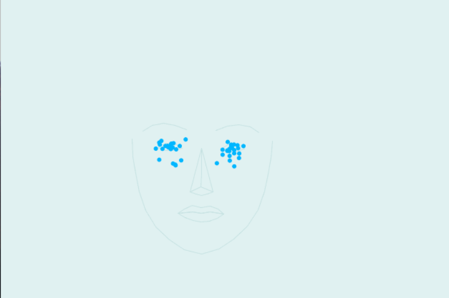
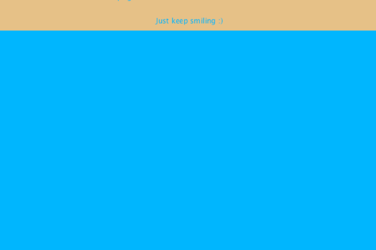

Crying Simulator

Using Processing and FaceOSC to analize facial expressions and create a crying simulator.
Source
Processing 3.0x template for receiving raw points from Kyle McDonald’s FaceOSC v.1.1. Adapted by Kaleb Crawford, 2016, after:
2012 Dan Wilcox danomatika.com. Adapted from from Greg Borenstein 2011
example and Ilyas Shafigin's
example as well as
this.
